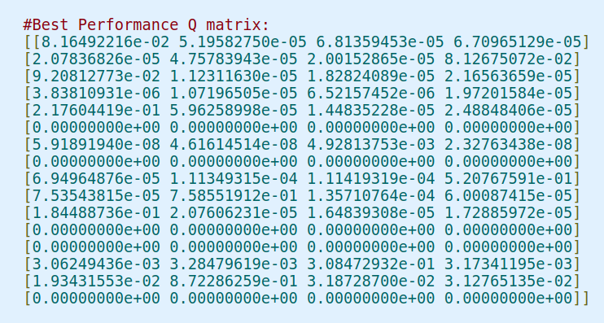
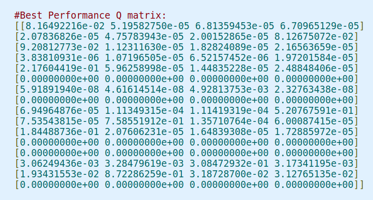
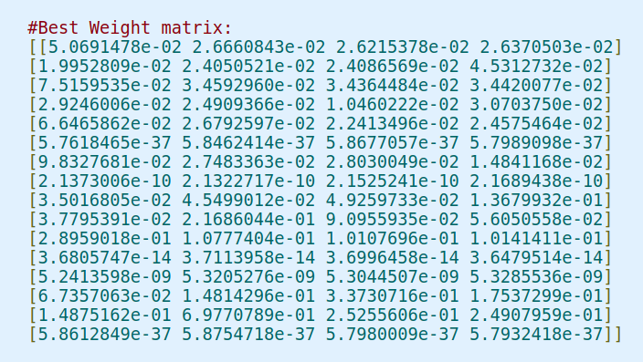
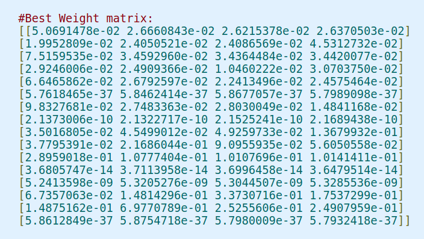
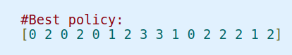
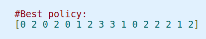

Basically, the agent (the player or you) will be given a 2D map of a default size 4-by-4, with letter code on each location, where
S = starting point, safe;
F = frozen surface, safe;
H = hole, fall to your doom;
G = goal, where the frisbee is located.
Your goal is to traverse from the starting point to the goal location to pick up the frisbee. For the above given map, one possible route is
| S | F | F | F |
|---|---|---|---|
| F | H | F | H |
| F | F | F | H |
| H | F | F | G |
What makes the problem interesting/hard is that, the agent are NOT always able to choose his direction. The probability of the chosen direction takes place is 33% by default. The agent will probably wander around back and forth for a couple of steps/episodes and finally get to the goal; or may simply missteped and fell into the hole.
The game ends when you reach the goal or fall in a hole. You receive a reward of 1 if you reach the goal, and zero otherwise.
We want to write a computer program to control our agent to accomplish the task. The agent is going to start off without any knowledge of the environment, and gradually learn the best moves base on mistakes or rewards, which eventually leads to expertise in the environment. This type of machine learning is categorized as Reinforcement Learning (RF). List of some applications.
Here is a great illustration I found online for RF:

For each stage (step or episode), the agent learns the State(s) of the environment and its associated Reward(r), and decides the type of Action(a) to take in the next stage. The decision process is where RF takes place. Luckily for us, we do not need to implement the game Environment nor the "Interpreter" as it is already written with OpenAI Gym Library.
import gym
def some_random_games(num_games=1):
'''
probability is set to 1, by using is_slippery=True, otherwise 0.33
observation/state = current location, counting by columns then rows, starting with 1
reward = 1 only G(Goal) is reached, otherwise 0
done = True when reach H(hole) or G
info = 0.33 by default
'''
env = gym.make('FrozenLake-v0', map_name="4x4", is_slippery=False)
for game in range(num_games):
env.reset() #reset and init the game env
print("\n=============================\nGame: {}".format(game))
print('Initial state/obs:')
env.render() #renders the plot
i, maxEpisodes = 0, 10
while i < maxEpisodes:
time.sleep(1)
i += 1
action = env.action_space.sample() #pick a random action from action space
observation, reward, done, info = env.step(action)
print("\n=============================")
print('episode {}\naction took: {}'.format(i, action))
print('\tobservation: {}\n\treward: {}\n\tdone: {}\n\tinfo: {}'.format(observation, reward, done, info))
env.render()
if done:
break
To help anyone understand the environment, above is a simple generic function for generating some random games. It can be easily adapted to other OpenAI Gym Environment, or be useful to understand how to build one's own environment. For this particular one, observation is a location of the agent (starting with 1, 2, 3 up till 16), and action is represented by integers (0=Left, 1=Down, 2=Right, 3=Up).
Note: "is_slippery=False" is used only to better illustrate the problem to new users. To get back to the original condition that "ice is slippery", simply use default value.
As you have seen, each game forms a (finite) sequence of state(s), action(a), reward(r), state(s'), action(a'), reward(r')... chain (known as the Markov Decision Process). If we are able to estimate the most suitable action to take base on the chain, then we can optimize our action and complete the game. We can use \( R_t \) as the total reward after an episode/step \( t \): $$ R_t = r_t + r_{t+1} + \cdots + r_n $$ However, the more into the future, the less likely the total rewards dependent on the future reward. Hence, we introduce a discount factor \( \gamma \), (usually set near 1, for example 0.9), and promote \( R_t \) as the discounted future reward : $$ \begin{align*} R_t &= r_t + \gamma r_{t+1} + \gamma^2 r_{t+2} + \cdots + \gamma^{n-t}r_n \\ &= r_t + \gamma R_{t+1} \end{align*} $$ In Q-learning, we wish to define a omnipotent function \( Q(s, a) \) to simply tell us the discounted future reward when we perform an action \(a\) in a state \(s\), so we can always take the best action. In that case, $$ Q(s,a) = r + \gamma \cdot \text{max}_{a'} Q(s', a').$$ This is the Bellman equation, the necessary condition for optimality with dynamic programming.
In practice, we can always start our \(Q\) with some random initial, and evolve its values by playing the game again and again. It is like using Newton's Method to find the \(\sqrt{2}\)...
$$ Q(s_t, a_t) \leftarrow \underbrace{Q(s_t, a_t)}_{\text{old value}} + \alpha \Big (\underbrace{r_{t+1} + \gamma \cdot \text{max}_{a_{t+1}} Q(s_{t+1}, a_{t+1})}_{\text{learnt value}} - Q(s_t, a_t) \Big ) $$ Here, \( \alpha \) is the learning rate, behaving just like the slope you used in Newton's method.This is the theory behind Q-learning. What makes it super powerful is that Q-learning is a model-free value-based RF method. We can easily adapt this method to most problems.
We solved the problem with the exact equation above. We started with an 16-by-4 zero matrix as our Q-table, for we have 16 different states and 4 actions for each state. We introduced a small value \(\epsilon\), or "mutation rate" to prevent the local minimum. In each episode, the agent need to decide if it will pick the best action according to current Q table or explore unknown region with a random action picked from the action space. Part of the codes are shown here:
epsilon = [0.1] # mutation rate
lr_rate = 0.81 # learning rate
gamma = 0.9 # discount factor
def choose_action(state):
if np.random.uniform(0, 1) < epsilon[0]:
action = env.action_space.sample() # explore new action
epsilon[0] -= 1e-4 # prevent over estimation
else:
action = np.argmax(Q[state, :]) # exploit current best
return action
def learn(state, state2, reward, action):
predict = Q[state, action] # old value
target = reward + gamma * np.max(Q[state2, :]) # learnt value
Q[state, action] = Q[state, action] + lr_rate * (target - predict) # updating the Q-table
Training using Gym environment:
def Q_train(Q, train_size = 200, max_steps = 100):
for episode in range(train_size):
state = env.reset()
t = 0
while t < max_steps:
action = choose_action(state)
state2, reward, done, info = env.step(action)
learn(state, state2, reward, action)
state = state2
t += 1
if done: break
return Q
At each 200 training, we test 100 games and record the number of games we reach the goal within 100 steps. Here is our results with vanilla Q-learning.
Total time: 7.4795 seconds. We reached a maximum winning rate of 80% at 5000 training games. It should be noticed that more training actually deteriorates the performance due to overfitting the model.
 

Instead of vanilla Q-learning, we can use TensorFlow to build a densely connected neural network to optimize the Weight matrices by minimizing the learnt value and old value in each iteration. Here is one working setup:
# TensorFlow Network Model for Q-learning:
x = tf.placeholder(shape=[1,16],dtype=tf.float32) # Input Layer, feeding "location of agent" as unit vector
weights = tf.Variable(tf.random_uniform([16,4],0,0.1)) # Hidden Layer of Weights, same as "Q-Table"
Q1 = tf.matmul(x,weights)
predict = tf.argmax(Q1,1) # Output Layer
Q2 = tf.placeholder(shape=[1,4],dtype=tf.float32) # Placeholder Layer used for Loss Function
loss = tf.reduce_sum(tf.square(Q2 - Q1))
trainer = tf.train.GradientDescentOptimizer(learning_rate=lr_rate)
updatedweights = trainer.minimize(loss)
lr_rate = 0.1 # Model parameters
gamma = 0.9
epsilon = 0.1
For each training:
state_now = env.reset()
for j in range(max_steps):
# Exploit from current network:
action, Y = sess.run([predict, Q1], feed_dict = {x:[np.eye(16)[state_now]]})
# Explore from random action:
if np.random.rand() < epsilon: action[0] = env.action_space.sample()
# Go to next step, get "learnt value", stored as "change_Y"
state_next, reward, done, info = env.step(action[0])
Y1 = sess.run(Q1, feed_dict = {x:[np.eye(16)[state_next]]})
change_Y = Y
change_Y[0, action[0]] = reward + gamma*np.max(Y1)
# Use Gradient Descent Optimizer
_, new_weights = sess.run([updatedweights,weights],feed_dict={x:[np.eye(16)[state_now]], Q2:change_Y})
state_now = state_next # Update state
if done and reward == 1:
print ('Training {} was successful!'.format(i))
epsilon -= 10**-3
Total time: 276.2445 seconds. We reached a maximum winning rate of 81% at 800 training games. We also observe similar heavy fluctuations for the rewards even after 1000 games. It is probably due to the probablistic nature of the moves our agent takes. (We tested when "is_slippery=False" turned on, the agent quickly reached 100% winning rate and remained.)
 

Of course, this problem can be solved using genetic algorithm, and as a matter of fact, it is simplier and have better performance. The code is very similar to my earlier Post. Here, our population is simply a policy: 1-D array of 16 elements, which decides the action of the agent at each location. Speaking of the fitness function, we simply return the winning rate of the policy over 100 games.
For the results below, I used 100 policies to run 20 generations with a decreasing mutation rate of 0.01. Total time: 60.8728 seconds. We reached a maximum winning rate of 80% at 15th Generation. Interestly, the flucations are much smaller in comparison, and the result actually convenged, unlike the Q-learning.
 
